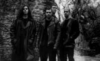

Introduction
Black Sabbath is a name to inspire both awe and fear in the hearts of those brave enough to venture into their realms. During the 1970s they defined the genre of what is now generically known as Heavy Metal. The sound was orchestrated by guitarist Tony Iommi with a Hell-nullifying bass line provided by Terry "Geezer" Butler. Bill Ward provided the cacophonic drum line and the crowning glory was introduced by the despairing cries of vocalist John "Ozzy" Osbourne. Their songs lay heavily in despondency and despair, yet, despite the doom-laden riffery, incited a strength and hope that has held countless for over three-and-a-half decades. Bands from Metallica and Nirvana to Entombed and Morbid Angel have all credited Black Sabbath with being the inspiration behind their music—this is testament enough to the significance of the music that they created.Sabbra Cadabra are one of Britain's leading Black Sabbath tribute bands and have brought fresh, young blood to re-live the original Sabbath performances. Their interpretation of the music fully captures the original energy and feel of a band renowned for their live performances and has already received high acclaim for their inspiring and faithful renditions of the original Sabbath texts. If you can't afford the originals then the next best thing is definitely worth a call.
Contact Details
Sabbra Cadabra are based in southwest England and can be contacted at the e-mail address below.Or, of course, visit our web site (you're already here!).